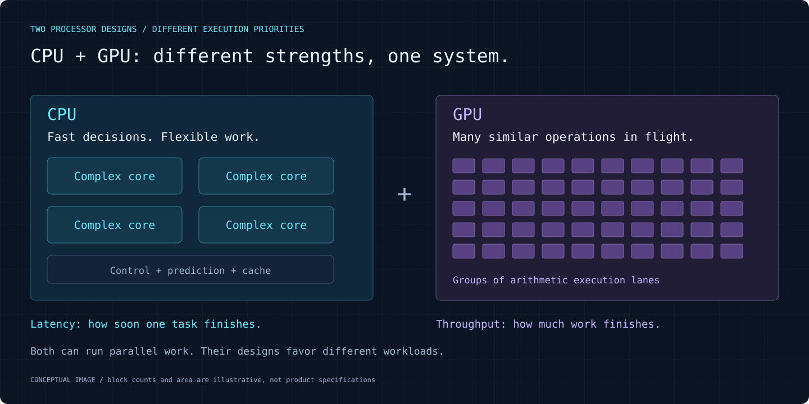
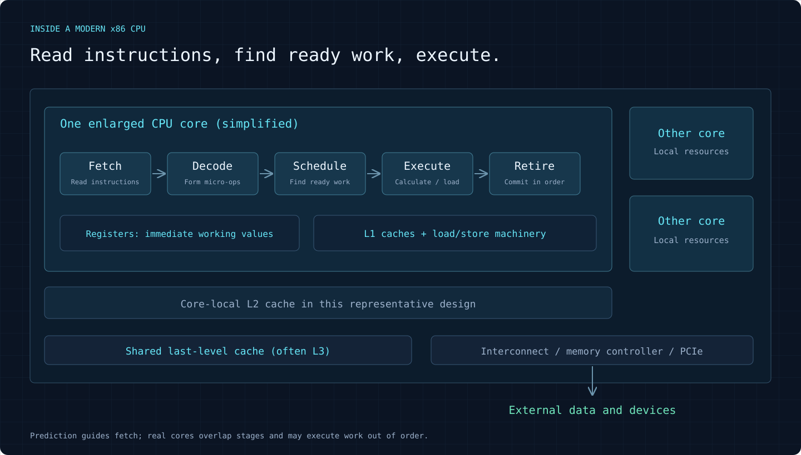
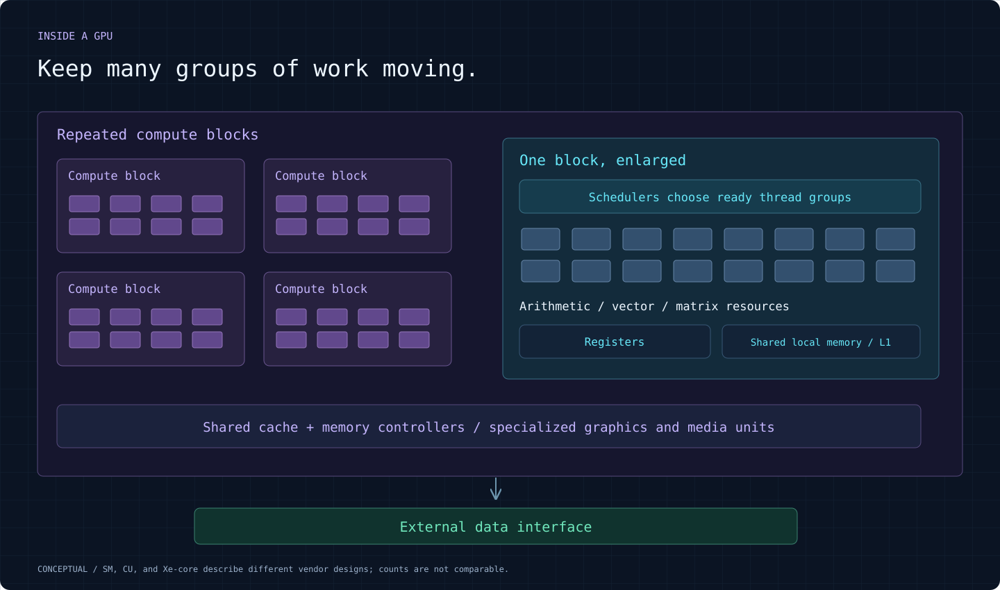
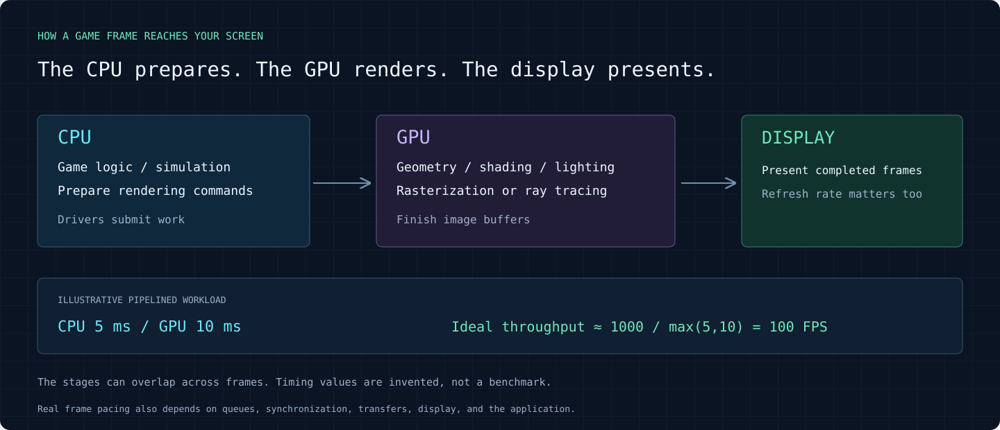

CPU vs GPU: two designs, different ways to execute work.
Start lookING inside the processors. Understand how x86 CPU cores and GPU compute blocks execute instructions, expose parallelism, and cooperate on real applications.

The CPU, or Central Processing Unit, runs the operating system and general application logic. It handles varied instructions, decisions, dependencies, and coordination. A modern CPU is built to make useful progress quickly across many different kinds of programs.
The GPU, or Graphics Processing Unit, provides substantial parallel execution resources. It was developed for graphics and also runs suitable general-purpose computations. Applying related operations to many pixels, vertices, or matrix elements can expose enough parallel work to use those resources well. [CPU/GPU overview]
The useful distinction is execution strategy: CPUs emphasize flexible, low-latency progress; GPUs emphasize high throughput across suitable parallel work.
In a GPU-accelerated photo application, the CPU may handle the input event and launch the selected operation, while the GPU processes pixel groups. Other applications may perform that operation entirely on the CPU. The software must expose the work in a form supported by the chosen processor.
Think of a kitchen with two kinds of teams
The CPU resembles a team of versatile chefs handling changing orders. The GPU resembles a large preparation line doing similar operations across many ingredients.
A chef may check an allergy, change a recipe, answer a new order, and decide what to cook next. That resembles the CPU's strength with complex control flow and quick individual responses.
Now imagine preparing thousands of similar portions. Many workers can perform the same stage on different portions at the same time. That resembles a GPU's strength when a large job can be divided into enough related pieces.
The analogy describes design priorities. CPUs also do parallel work, and GPUs can execute sophisticated programs. A GPU is especially useful when its many execution resources have suitable work and enough data to stay busy.
- Latency: how long one job takes
- How quickly does an individual request get an answer? This matters when you click a menu or a game waits for its next simulation step.
- Throughput: how much work finishes over time
- How many pixels, samples, or calculations can the system complete per second? This matters for large rendering and compute workloads.
Sending one tiny order to a big production line can take longer than letting a nearby chef do it. Starting GPU work, moving data, and waiting for results all have costs. [Data-transfer and workload costs]
What x86 means, and what is inside a core
x86-64 is an instruction-set architecture: the software-visible instructions and behavior a processor supports. Intel and AMD make familiar x86 PC processors. The microarchitecture is the internal design that carries out those instructions. Two CPUs can run compatible software while differing greatly in speed, power, cache organization, and internal execution resources. [x86 architecture manuals]
A CPU core is an execution engine capable of making progress on software work. A modern core has much more than a calculator inside it: instruction handling, prediction, scheduling, arithmetic, memory access, registers, and caches all contribute.


Follow one piece of work
- Fetch: bring the next instructions toward the core. Instruction caches help avoid slower memory accesses.
- Decode: interpret the x86 instruction stream. Modern designs commonly turn instructions into internal micro-operations, often called micro-ops.
- Schedule: find operations whose inputs and execution resources are ready. Independent work may proceed while another operation waits.
- Execute: arithmetic units calculate; load/store machinery accesses data. A core can contain multiple execution units.
- Retire: commit completed work in architectural order so the program sees the required behavior.
Real cores overlap these activities. Branch prediction guesses likely paths so execution can stay supplied with work. Out-of-order execution helps use ready operations rather than stopping at every wait. Wrong guesses have a cost. These mechanisms help explain why CPU performance involves much more than a clock number. [AMD Zen architecture]
Registers and caches keep execution supplied
Registers hold immediate working values inside a core. Caches keep reusable instructions and data close to execution resources. A common hierarchy has L1, L2, and a larger last-level cache often called L3, with model-dependent sharing. These structures matter because arithmetic units cannot progress on an operation until its required inputs are available.
More cache can help a workload that repeatedly reuses data. It does not automatically make every program faster. Memory access patterns and the rest of the core design still matter.
Cores, threads, and hybrid processors
A software thread is a stream of program work. An operating system schedules runnable threads on the CPU's available hardware contexts. Simultaneous multithreading (SMT), when a model supports it, allows multiple hardware threads to share one physical core. Two threads sharing a core are not two complete physical cores.
Some Intel processors mix Performance-cores and Efficient-cores. These core types have different capabilities and power/performance goals. Features such as SMT vary by model and generation; for example, the Core Ultra 7 265K has 20 cores and 20 threads. Never assume every core supports two threads. [Intel hybrid design] [265K specifications]
Execution consequence: additional cores can increase throughput when the software exposes independent runnable work. Dependencies and serial stages still constrain how quickly one task can finish.
A processor designed to keep a lot of work in flight
Enlarging an image, shading a scene, or multiplying matrices involves many calculations that can often be divided across data. A GPU groups substantial arithmetic resources with hardware that schedules many threads of work.
In NVIDIA's terminology, work runs on Streaming Multiprocessors (SMs). AMD uses organizations built around Compute Units (CUs) and related groupings; Intel uses terms such as Xe-core. These names describe different designs. One SM, one CU, and one Xe-core are not interchangeable counting units.


What the blocks do
- Schedulers choose groups of ready work.
- Arithmetic and vector resources perform operations across many data elements.
- Registers hold values for executing threads.
- Fast local/shared memory and caches help nearby work reuse data.
- A broader memory system feeds the compute blocks. Its organization and connection to the rest of the system vary across GPU designs.
NVIDIA's programming model organizes threads into blocks and grids, with blocks assigned to SM resources. Blocks can cooperate through shared memory within the model's rules. That is a software execution model; it is not a promise that every thread runs at the same instant. [NVIDIA hardware and programming model]
Warps, wavefronts, and keeping the lanes busy
GPUs execute work in groups often called warps or wavefronts. NVIDIA commonly uses 32-thread warps; AMD group width depends on architecture and execution mode. These groups are hardware scheduling/execution concepts, distinct from the CPU hardware execution contexts.
If a group waits for memory, other ready work can help keep the GPU productive. If neighboring threads take different branches, some paths may need separate execution with some lanes inactive. This divergence can reduce useful throughput. AMD's hardware documentation describes how compute units, work groups, and memory resources fit together. [AMD GPU hardware]
Modern graphics chips also contain specialists
Depending on the model, a GPU can include dedicated matrix/AI units, ray-tracing acceleration, texture sampling, and video encode/decode engines. A video engine can handle supported media operations without using every general shader lane. Intel's Xe documentation likewise separates vector/matrix resources and other GPU capabilities. [Intel Xe architecture]
Execution consequence: general arithmetic, matrix operations, graphics operations, and media processing can use different hardware paths. Their benefits depend on which path the application actually invokes.
The useful CPU–GPU comparison
| Question | CPU | GPU |
|---|---|---|
| Main strength | Flexible, responsive execution of varied program work. | High throughput for suitable graphics and parallel compute work. |
| Control flow | Strong support for branching, dependencies, and changing tasks. | Most efficient when enough neighboring work can follow useful parallel paths. |
| Parallelism | Multiple cores, hardware threads when supported, and vector instructions. | Many scheduled threads and arithmetic resources grouped into compute blocks. |
| Memory context | Uses registers and caches to reduce the cost of supplying instructions and data to cores. | Uses a hierarchy of registers, fast local storage, caches, and external data interfaces whose organization varies by design. |
| Software role | Runs the OS and general application code. | Runs graphics work or compute work explicitly supported by the software stack. |
| Common bottleneck | Dependencies, one busy thread, cache misses, memory, or insufficient parallelism. | Data supply, memory capacity/bandwidth, scheduling resources, or insufficient useful parallel work. |
Eight CPU cores and thousands of GPU “cores” are different units. A shader arithmetic lane is not a full x86 CPU core. Instruction handling, scheduling, execution width, and resource sharing are organized differently; dividing the counts does not produce a meaningful speed ratio.
The same caution applies across GPU brands: CUDA-core, stream-processor, and Xe-core counts are architecture-specific labels. Even within one vendor, architectural changes can alter what a count represents.
Independent work and dependent work behave differently
A large operation count alone does not imply that a GPU will help. The important question is how much useful work is ready at the same time.
Independent elements: expose data parallelism
Consider doubling four input values. Each output depends on only its matching input:
Inputs: [2, 4, 6, 8]
Rule: output[i] = input[i] * 2
Outputs: [4, 8, 12, 16]The calculations for indices 0, 1, 2, and 3 are independent. A CPU can process them with scalar instructions, vector instructions, or multiple threads. A GPU kernel can assign elements to many threads. The difference lies in execution scale, scheduling, overhead, and how well the available resources can be used.
For four numbers, launching GPU work may cost more time than the calculation. For millions of independent elements, there may be enough useful parallelism to amortize that overhead. This is a qualitative example, not a measured crossover size.
A dependency chain: the next input is not ready yet
Start with x = 1
Step 1: x = x * 2 + 1 gives 3
Step 2: x = x * 2 + 1 gives 7
Step 3: x = x * 2 + 1 gives 15In this direct step-by-step execution, each update needs the previous result. Assigning the three updates to different execution lanes does not remove that dependency. A different algorithm or mathematical reformulation may expose other parallelism, but the hardware cannot simply ignore the required inputs.
Task parallelism versus data parallelism
Task parallelism runs different pieces of work concurrently, such as handling requests, decoding input, and coordinating computation. Data parallelism applies related work to different data elements. CPUs and GPUs can participate in both; their architectures favor different mixtures and granularities.
Both processors exploit parallelism. CPU cores can find instruction-level parallelism inside a thread and run multiple threads across cores. GPUs expose extensive thread/data parallelism through their compute blocks. “CPU is serial, GPU is parallel” misses these different levels.
How real applications divide the computation
Interactive application logic
Opening a menu, responding to input, parsing a request, maintaining program state, and deciding what to do next involve varied control flow and dependencies. CPUs are designed to handle this kind of general execution well. Some stages may be parallel, while others are constrained by the application's logic.
Graphics and image processing
Graphics expose work across vertices, fragments, pixels, rays, and samples. GPUs combine programmable execution with specialized graphics facilities. A photo filter can expose many independent pixels; a rendering pipeline also contains coordination and dependencies, so the whole application is not one perfectly parallel operation.
Scientific simulation and matrix operations
Many numerical workloads divide into large arrays, grids, or tiles. When enough related computation can run concurrently, GPU execution can provide high throughput. The CPU often handles setup, control decisions, and stages that are less suitable for offload. Different algorithms, numerical formats, and implementations can change the result.
AI computation
Neural-network workloads often contain matrix operations that map well to vector or matrix execution resources. Other stages include control, preparation, synchronization, and small operations whose overhead matters. CPUs can execute AI workloads too; the useful execution path depends on the algorithm, numerical format, framework, and target.
Compilation, parsing, and irregular algorithms
These can involve pointer chasing, branching, variable-sized tasks, and dependencies. Multiple CPU cores can process independent work, but a large amount of irregular control flow can make straightforward GPU mapping less efficient. This describes a common pattern, not a rule that such algorithms can never use a GPU.
The software execution path matters
An ordinary x86 instruction stream runs on a compatible CPU. GPU work usually follows a graphics API or a compute programming model: the host program submits commands or launches a kernel, meaning a function executed as GPU work. CUDA, HIP, and SYCL are examples of programming ecosystems/models; they are not names for identical GPU hardware.
The compiler and runtime map that work to supported device instructions and resources. A program does not use a GPU automatically just because it contains a long loop. The application or its libraries must provide a suitable execution path. [Host/device execution model]
Conditions for useful acceleration
- Enough independent or cooperative work to use the execution resources.
- A granularity large enough that dispatch and coordination costs do not dominate.
- Suitable numerical operations and supported software.
- An efficient way to supply operands, reuse data, and obtain results.
- Synchronization and control flow that leave enough resources doing useful work.
CPU and GPU cooperation: a frame pipeline
In a simplified game frame, the CPU advances game logic and prepares rendering work. The GPU processes the submitted graphics work and produces image buffers. The display system presents completed frames. Much of this can overlap across successive frames.


An easy bottleneck example
Suppose the CPU needs 5 milliseconds of work per frame and the GPU needs 10. In an ideal steady-state pipeline with sufficient overlap and no other limits, throughput is bounded by the slower 10 ms stage:
Approximate frame rate = 1000 / max(CPU ms, GPU ms)
= 1000 / max(5, 10)
= 100 FPSMaking the CPU stage 3 ms leaves the 10 ms GPU stage as the limit. Making the GPU stage 6 ms moves that ideal bound to about 167 FPS, until another stage or limit takes over. These are arithmetic examples of a changing throughput limit, not measurements of a particular processor.
End-to-end input latency is a different measurement from steady-state frame throughput. Real frame rates and responsiveness also depend on synchronization, queues, transfers, engine limits, display refresh, and frame pacing.
A bottleneck is a property of a workload on a system. The limiting execution stage can change with the algorithm, input size, control flow, parallelism, and operating conditions.
Manufacturers and architecture examples
Processor families make the architecture discussion concrete. The examples below identify designs and configurations; their advertised unit counts measure different kinds of resources.
x86 CPU examples
- Intel Core and Core UltraThese families span multiple microarchitectures. The Core Ultra 7 265K is an example with 8 Performance-cores and 12 Efficient-cores, totaling 20 cores and 20 threads. It illustrates a heterogeneous core organization and why core count need not equal half the hardware-thread count.
- AMD Ryzen and ZenThe Ryzen 7 9800X3D is a Zen 5 example with 8 cores, 16 threads, and 3D V-Cache technology. The Ryzen 9 9950X is a Zen 5 example with 16 cores and 32 threads. These illustrate that CPUs within one architectural generation can have different core/cache organizations.
GPU examples
- NVIDIA GeForce RTX and BlackwellThe GeForce RTX 50 family, including models such as RTX 5070 and RTX 5090, provides examples of the Blackwell graphics architecture with programmable shader resources and specialized matrix and ray-tracing capabilities.
- AMD Radeon RX and RDNAThe Radeon RX 9070 XT is an RDNA 4 example. AMD GPU terminology includes compute units and architecture-specific groupings and execution resources.
- Intel Arc and XeThe Arc B580 is a Xe2 example. Intel describes vector and matrix resources using its own architectural organization, including Xe-cores.
A CPU core, GPU shader lane, NVIDIA SM, AMD CU, and Intel Xe-core sit at different levels of organization. Their instruction issue, scheduling, resource sharing, and supported operations must be understood before comparing counts.
Advanced concepts: where performance comes from
These topics connect the execution model to achieved performance. Open whichever interests you.
CPU SIMD and GPU SIMT: both exploit parallelism
SIMD means one instruction operates on multiple data elements. Modern x86 CPUs support vector instruction families, with exact extensions depending on the model and OS/software support. A CPU core can therefore perform more than one arithmetic operation's worth of work through its vector resources.
SIMT, a common way to describe GPU programming, presents many threads whose work is executed in groups over parallel resources. GPUs also contain vector-style hardware. These models help explain the design without reducing the comparison to one CPU worker versus thousands of complete CPU-like cores.
Amdahl's law: accelerate one part, measure the whole task
Imagine a job taking 100 seconds. Twenty seconds must remain on the CPU, while 80 seconds can be accelerated. If the GPU makes that 80-second portion ten times faster, it now takes 8 seconds.
Original total: 20 + 80 = 100 seconds
New total: 20 + 8 = 28 seconds
Overall speedup: 100 / 28 ≈ 3.57×This invented example ignores transfer and coordination overhead. It shows why a ten-times-faster kernel does not automatically make an application ten times faster. The nonaccelerated part still counts.
Compute-bound versus memory-bound work
A workload is compute-bound when arithmetic resources are the main limit. It is memory-bound when delivering data is the main limit. Some programs change between these states in different stages.
Arithmetic intensity describes how much useful calculation is performed per byte moved. Reusing data can let a processor do more work before asking memory for more. This is why cache behavior, GPU local memory, and memory access patterns matter alongside advertised arithmetic rates.
The roofline idea summarizes the limit as the smaller of the available compute rate and the memory bandwidth multiplied by arithmetic intensity. A faster compute engine alone may barely help a bandwidth-limited stage. [Optimization principles]
GPU occupancy, divergence, and data placement
Occupancy concerns how much of the architecture's supported thread-group residency is in use. Registers, local/shared memory, and other limits affect how much work can reside at once. A high occupancy number does not guarantee high useful throughput.
Enough ready work helps hide waits. Coherent neighboring memory accesses can improve efficiency; divergence or expensive synchronization can reduce it. Software design and libraries therefore have a large influence on the achieved GPU throughput. [GPU resource organization]
Specialized arithmetic units and numerical precision
Matrix accelerators can execute certain operations much more efficiently than general-purpose arithmetic resources. Names and supported formats vary: NVIDIA Tensor Cores, Intel matrix engines, and AMD matrix/AI resources are architecture-specific implementations.
Lower precision can reduce memory use and increase some operation rates, but the software must support the format and the workload must tolerate its numerical behavior. A peak sparse INT8 number does not describe dense FP32 performance.
Power limits, cooling, and sustained speed
A short burst and a long render can have different winners. A processor may start at a high operating point and then settle at a lower sustained frequency because of its thermal or power envelope.
Operating frequency is a dynamic property, not a fixed promise about useful instructions per second. Meaningful performance analysis records the workload, operating conditions, power limits, and duration.
Technical glossary
- ISA / microarchitecture
- The software-visible instruction contract / the internal design implementing it.
- Core / execution lane
- A CPU core includes substantial instruction/control machinery. A GPU arithmetic lane is one resource within a larger scheduling and execution organization.
- Thread
- A software stream of work or a hardware execution context, depending on context. CPU hardware threads and GPU programming threads have different scheduling/resource meanings.
- Instruction-level parallelism
- Independent operations from an instruction stream that can overlap in execution.
- Task / data parallelism
- Concurrent different tasks / related work across different data elements.
- SIMD / SIMT
- One instruction operating on multiple data elements / a programming and execution model presenting many threads mapped to grouped execution resources.
- Latency / throughput
- Time until one result / the amount of useful work completed over time.
- Warp / wavefront
- A grouped execution/scheduling concept on a GPU; width and behavior are architecture-dependent.
- Kernel
- A function submitted for GPU execution in a compute programming model. Here it is distinct from an operating-system kernel.
- Divergence
- Different control-flow paths within grouped GPU work that may reduce simultaneous useful lane activity.
- Occupancy
- How much of the supported thread-group residency is in use; it is not itself a measure of useful throughput.
- Dispatch / synchronization
- Submitting work / coordinating ordering and visibility between pieces of work.
- Registers / cache
- Immediate working values / nearby storage that helps execution reuse instructions and data.
- Specialized execution unit
- Hardware optimized for particular operations, such as matrix arithmetic, texture sampling, ray traversal/intersection tasks, or supported media processing.
Primary technical sources
- Intel: CPU vs GPU — processor roles.
- Intel architecture and optimization manuals — x86 instructions and processor implementation concepts.
- AMD Zen architecture — CPU implementation and execution design.
- Intel performance hybrid architecture — different core types and threading.
- NVIDIA GPU programming/hardware model — threads, kernels, blocks, SMs, and host/device execution.
- AMD HIP hardware implementation — compute units, grouped work, and execution resources.
- Intel Xe GPU architecture — vector/matrix organization.
- NVIDIA CUDA best practices — workload organization, overhead, and performance limits.
Product examples are linked to their official architecture/specification sources and were checked on 24 November 2026. Images are conceptual educational illustrations; block counts and areas are not product specifications. Timing and speedup examples are hypothetical calculations, not benchmarks.